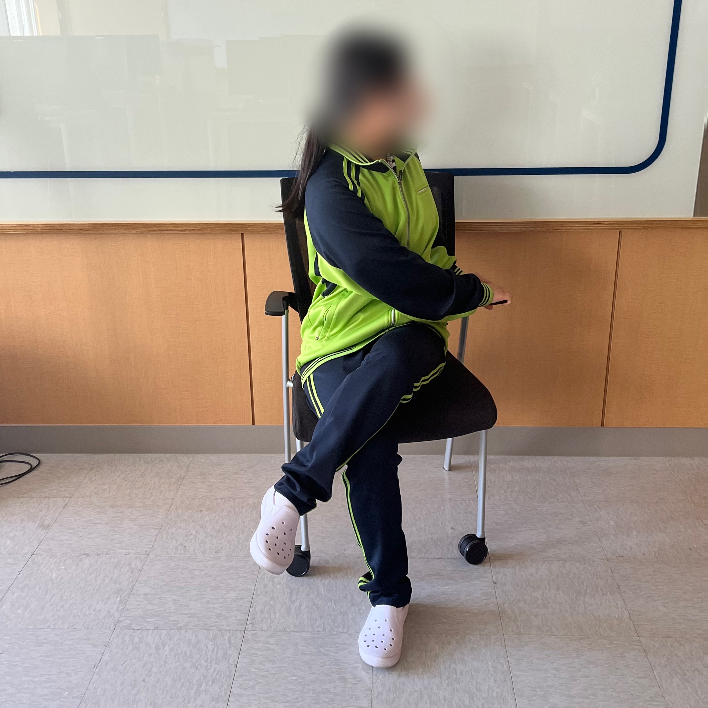
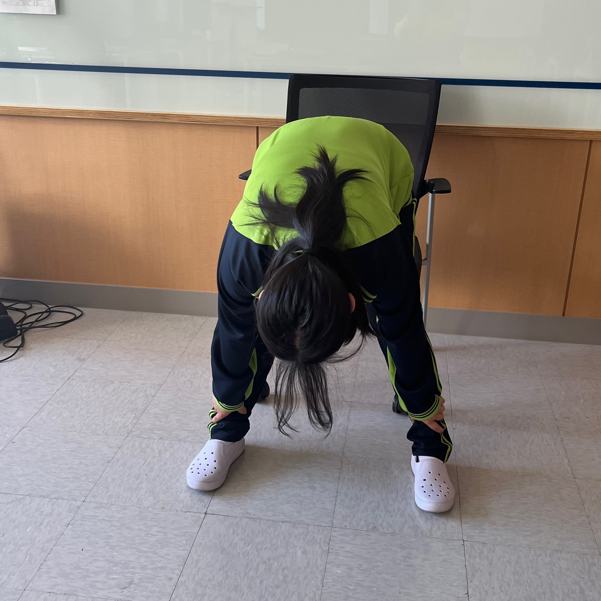
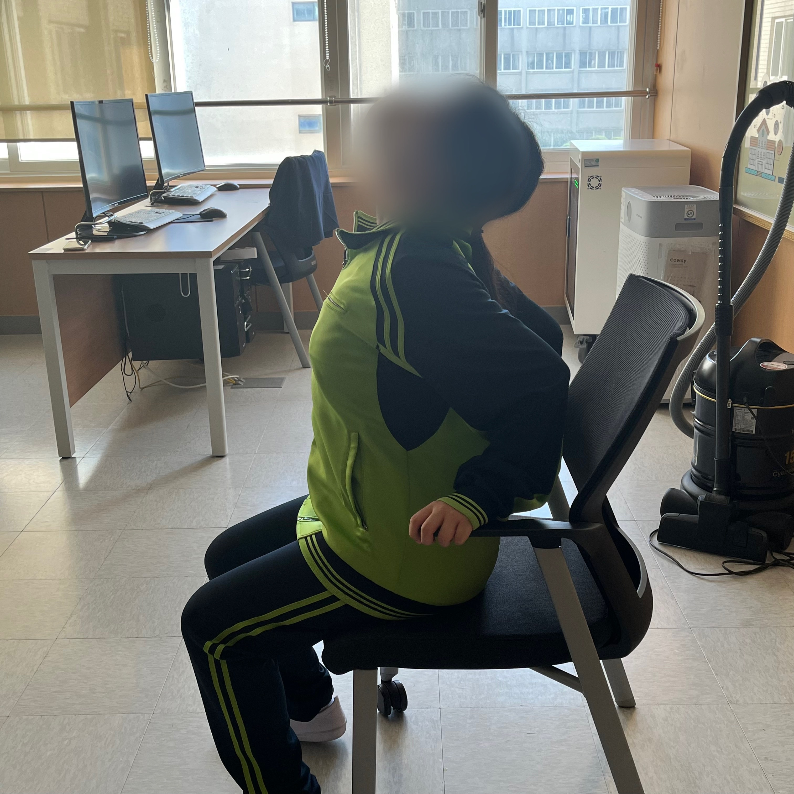

탈출! 거북목
신체 : 허리
시간 : 2분
|  |
1. 2세트 | 15초1. 의자에 앉아서 왼쪽 다리를 꼬고 몸을 왼쪽으로 돌려준다. 2. 오른손은 왼쪽 팔걸이 또는 허벅지에 올려놓고 왼손은 등받이를 잡아준다. 3. 허리를 곧게 세운 후 뒤를 돌아보듯 몸통을 돌린다. 4. 오른쪽도 똑같이 진행해준다. |
|  |
2. 3세트 | 10초1. 양 발을 어깨 너비로 벌려준다. 2. 고개를 숙여 양손으로 발목을 잡는다. 3. 허리에 힘을 빼고 엎드린 뒤 유지한다. |
|  |
3. 3세트 | 10초1. 양쪽 팔걸이를 잡고 가슴을 내밀면서 고개를 뒤로 젖혀준다. 2. 양쪽 팔걸이를 잡고 가슴을 내밀면서 고개를 뒤로 젖혀준다. 3. 허리를 최대한 둥글게 말아서 척추 뼈를 전체적으로 이완한다. |